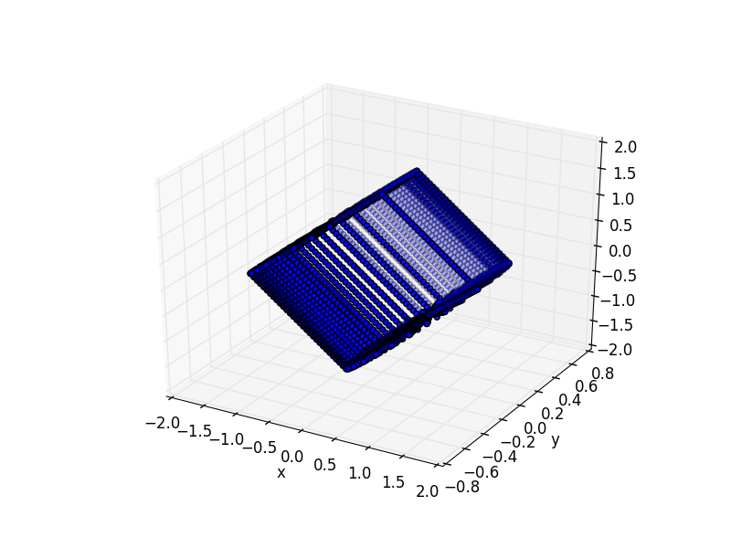

Problem set 4, ORF523
+HTMLHEAD: <link href="http://thomasf.github.io/solarized-css/solarized-dark.min.css" rel="stylesheet"></link>
1 Problem 1
Notations:
- \(c^*\) the solution to the problem. It exists because every subset of \(\mathbb R\) has a supremum.
- \(X = (x_1, x_2, x_3, x_4)\)
\(f(X) = X^T\begin{pmatrix} 1 & -\frac12 & a & \frac1{10} \\ -\frac12 & 1 & b & c \\ a & b & 1 & -\frac3{10} \\ \frac1{10} & c & -\frac3{10} & 1 \\ \end{pmatrix} X+\begin{pmatrix}2\\-a\\0\\c\end{pmatrix}^TX := X^TSX + w^TX\)
- If \(S\) is not nonnegative semi definite, there exist \(X\) such that \(X^TSX < 0\), and
\[f(\lambda X) = \lambda^2 X^TSX + \lambda w^TX \rightarrow_{\lambda \infty} -\infty\] In order for the optimzation problem to be finite, we therefore need to have \(S \ge 0\).
- If \(S\) positive definite, Let \(\lambda_{\min}\) be its smallest eign value. Then \(f(X) \ge \lambda_{\min} ||X||^2 - ||w|| ||X|| \ge \lambda_{\min} (||X|| - \frac1{2\lambda_{\min}}||w||)^2 + cte\) is bounded from below.
Let \(c^+\) be the solution to the following convex optimization problem: \(\max_{a, b, c, S \ge 0} c\)
n = 4 cvx_begin quiet variable S(n,n) hermitian; variable a; variable b; variable c; maximize(c); S == hermitian_semidefinite( n ); for i = 1:4 S(i, i) == 1 end S(1, 2) == -1/2; S(1, 3) == a; S(1, 4) == 1/10; S(2, 3) == b; S(2, 4) == c; S(3, 4) == -3/10; cvx_end ans = [a b c]
| -0.054543 | -0.22906 | 0.81168 |
\(0.8116 > c^+\) For all \(c > c^+\), the optimization problem is not finite, so \(c^* \le c^+\).
Let \(c^- = 0.8115\), we check with CVX that \[S =\begin{pmatrix} 1 & -\frac12 & a^- & \frac1{10} \\ -\frac12 & 1 & b^- & c^- \\ a^- & b^- & 1 & -\frac3{10} \\ \frac1{10} & c^- & -\frac3{10} & 1 \\ \end{pmatrix} > 0 \] with \(a^- = -0.0682\), \(b^- = -0.2216\) The problem for \(c^-\) is then finite, so \(c^- <= c\).
Conclusion: \[0.9116 \le c^* \le 0.9117\] or \[c^* \approx 0.911\]
2 Alternative way
\[ S = \begin{pmatrix} 1 & -\frac12 & a & \frac1{10} \\ -\frac12 & 1 & b & c \\ a & b & 1 & -\frac3{10} \\ \frac1{10} & c & -\frac3{10} & 1 \\ \end{pmatrix}\]
With a change of variable \(x_3 \leftrightarrow x_4\), we can rewrite \(S\): \[Q = \begin{pmatrix} 1 & -\frac12 & \frac1{10} & a\\ -\frac12 & 1 & c & b\\ \frac1{10} & c & 1 & -\frac3{10}\\ a & b & -\frac3{10} & 1 \end{pmatrix}\]
Note that \(Q \ge 0 \iff S \ge 0\), and \(Q > 0 \iff S > 0\).
In order of \(Q\) to be positive semi-definite, the following submatrix has to have a non-negative determinant:
\[ Q_1 = \begin{pmatrix} 1 & -\frac12 & \frac1{10} \\ -\frac12 & 1 & c \\ \frac1{10} & c & 1 \\ \end{pmatrix}\]
syms a b c; S=[1,-1/2,a,1/10;-1/2,1,b,c;a,b,1,-3/10;1/10,c,-3/10,1]; Q_1 = [1 -1/2 1/10; -1/2 1 c; 1/10 c 1]
\(det(Q_1) = - c^2 - \frac1{10}c + \frac{37}{50}\)
It has two roots \(r_1 = \frac{-1 - 3\sqrt{33}}{10}, r_2 = \frac{-1 + 3\sqrt{33}}{10}\). Since the leadin coefficient is negative, the polynomial is non-negative iff \(c \in [r_1, r_2]\).
Let's now check that for \(c \in ]r_1, r_2[\), there exist \(a, b\) that make \(Q > 0\). Indeed, by using Sylvester criterion:
- \(1 > 0\)
- \[\det\begin{pmatrix}1&-\frac12\\-\frac12&1\end{pmatrix} = 1 - \frac14 > 0\]
- \(det(Q_1) > 0\)
It remains to show that there exist to show that there exist \(a, b\) that make the following determinant positive:
\begin{align*}P(a, b) &:= \begin{vmatrix} 1 & -\frac12 & \frac1{10} & a\\ -\frac12 & 1 & c & b\\ \frac1{10} & c & 1 & -\frac3{10}\\ a & b & -\frac3{10} & 1 \end{vmatrix} \\&= a^2c^2 - (3b)/100 - c/10 - ab - (3ac)/10 - (3bc)/5 - a^2 - (99b^2)/100 - c^2 - (3a)/50 - (abc)/5 + 269/400 \\&= (c^2 - 1) a^2 -\frac{99}{100} b^2 - (\frac3{10}c + \frac3{50})a - (\frac3{100} + \frac35 c)b - (\frac{c}5+1) ab - c^2 - c/10 + \frac{269}{400} \\&= -\begin{pmatrix}a\\b\end{pmatrix}^T \underbrace{\begin{pmatrix}1-c^2&\frac{c}{10}+\frac12\\\frac{c}{10}+\frac12&\frac{99}{100}\end{pmatrix}\begin{pmatrix}a\\b\end{pmatrix}}_R - \underbrace{\begin{pmatrix}\frac3{10}c + \frac3{50}\\ - (\frac3{100} + \frac35 c)\end{pmatrix}}_{v}\begin{pmatrix}a\\b\end{pmatrix} \underbrace{- c^2 - c/10 + \frac{269}{400}}_{\alpha} \\&= \begin{pmatrix}a\\b\end{pmatrix}^TR\begin{pmatrix}a\\b\end{pmatrix} -v\begin{pmatrix}a\\b\end{pmatrix} + \alpha \end{align*}\(R\) is symmetric, we can decompose it as \(R = UU^T\) with
\[U =\begin{pmatrix} \sqrt{1 - c^2} & \frac{c + 5}{10\sqrt{1 - c^2}}\\ 0 & \sqrt{\frac{50c^2 + 5c - 37}{50(c^2 - 1)}} \end{pmatrix} \]
Let's do the change of variable \((x, y) = U(a, b)\): \[P(a, b) = \begin{pmatrix}x\\y\end{pmatrix}^T\begin{pmatrix}x\\y\end{pmatrix} -(vU^{-1})\begin{pmatrix}x\\y\end{pmatrix}+ \alpha\]
R = [(1-c^2), (c/10 + 1/2); (c/10+1/2), 99/100]; U = chol(R, 'real'); v = -[] ans = 0
3 Problem 2
- Let \(\Vert A\Vert _{\text{dual}} = \max_{\Vert X\Vert _{op} \le 1} \langle Y, X\rangle\) and let's prove that \(\Vert A\Vert _* = \Vert A\Vert _{\text{dual}}\)
If \(A = U\Lambda V^T\) be the SVD decomposition of \(A\), then \(\nucnorm{A} = \tr(\Lambda)\)
- Let \(A = U\Lambda V^T\) be the SVD decomposition of \(A\), then \(\langle A, UV^T\rangle = \tr(V \Lambda U^TUV^T) = \tr(V\Lambda V^T) = \tr(\Lambda) = \Vert A \Vert _*\). Note that \(\opnorm{UV^T} = 1\) because \(UV^T\) is orthogonal. We have just proved that \(\Vert A\Vert _* \le \Vert A\Vert _{\text{dual}}\)
- Let \(X\) be a matrix st \(\opnorm{X} \le 1\), \(\langle A, X\rangle = \tr(A^TX) = \tr(V \Lambda U^TX) = \tr(\Lambda U^TXV) = \sum \Lambda_{ii} (U^TXV)_{ii} = \sum \Lambda_{ii} \underbrace{u_i^TXv_i}_{\le \Vert X\Vert _{op}} \le \Vert X\Vert _{op} \Vert \Lambda\Vert _* \le \Vert A\Vert _*\). so \(\Vert A\Vert _* \ge \Vert A\Vert _{\text{dual}}\)
- As a conclusion \(\Vert A\Vert _* = \max_{\Vert X\Vert _{op} \le 1} \langle Y, X\rangle\), and \(\opnorm{.}\) is the dual of \(\nucnorm{.}\)
Let's now prove that the nuclear norm is indeed a norm:
- If \(\nucnorm{A} = 0\), then \(\forall i \le m \wedge n \; \sigma_i(A) = 0\), If \(U\Lambda V\) the SVD of A, then \(\Lambda = 0\), and therefore \(A = 0\).
- If \(\alpha > 0\), \(\alpha A = U (\alpha \Lambda) V^T\), and therefore \(\nucnorm{\alpha A} = \tr(\alpha \Lambda) = \alpha \tr(\Lambda) = \alpha \nucnorm{A}\)
- If \(\alpha < 0\), \(\alpha A = (-U) (-\alpha \Lambda) V^T\), we conclude in the same way as before.
- \(\nucnorm{A + B} = \max_{\opnorm{X} \le 1} = \max_{\opnorm{X} \le 1}
Let's first find unit sphere
\(A = \begin{pmatrix}x&y\\y&z\end{pmatrix}\), Let \(\lambda_1, \lambda_2\) be its eigen values.
\begin{align*} \nucnorm{A} = 1 & \iff |\lambda_1| + |\lambda_2| = 1 \\ &\iff \lambda_1^2 + \lambda_2^2 + 2|\lambda_1\lambda_2| = 1 \\ &\iff (\lambda_1 + \lambda_2)^2 + - 2\lambda_1 \lambda_2 + 2 |\lambda_1\lambda_2| = 1 \\ &\iff \tr(A)^2 + 2 (|det(A)| -det(A)) = 1 \\ &\iff (\tr(A)^2 = 1 \text{ and } \det(A) \ge 0) \text{ or } (\tr(A)^2 - 4 det(A) = 1 \text{ and } \det(A) \le 0) \\ &\iff ((x+z)^2 = 1 \text{ and } xz \ge y^2) \text{ or } ((x+z)^2 - 4 (xz-y^2) = 1 \text{ and } xz \le y^2) \\ &\iff ((x+z)^2 = 1 \text{ and } xz \ge y^2) \text{ or } ((x-z)^2 + 4 y^2 = 1 \text{ and } xz \le y^2) \end{align*}Let's do the linear change of variable
\begin{align*} u &= \frac{x + z}{\sqrt 2}\\ v &= \sqrt2 y\\ w &= \frac{x - z}{\sqrt 2}\\ \end{align*}Which can also be written in matrix form as:
\[\begin{pmatrix}u\\w\\v\end{pmatrix}=\underbrace{\begin{pmatrix} cos(-\frac{\pi}4)&-sin(-\frac{\pi}4)&0\\ sin(-\frac{\pi}4)&cos(-\frac{\pi}4)&0\\ 0&0&\frac1{\sqrt2}\\ \end{pmatrix}}_{R} \begin{pmatrix}x\\z\\y\end{pmatrix}\] The linear transformation \(R\) is then a rotation of \(-\frac{\pi}4\) in the \((X, Z)\) plane, and a scaling of \(\frac1{\sqrt2}\) along the \(Y\) axis.
To find the shape of the unit cylinder, we work in the \((u, v, w)\) space, and then we apply to inverse transformation of \(R\).
Then \(2xz = u^2 - w^2\), and
\begin{align*} \nucnorm{A} = 1 &\iff (2 u^2 = 1 \text{ and } u^2 - w^2 \ge v^2) \text{ or } (2 w^2 + 2 v^2 = 1 \text{ and } u^2 - w^2 \le v^2) \\&\iff (u^2 = \frac12 \text{ and } u^2 \ge v^2 + w^2) \text{ or } (w^2 + v^2 = \frac12 \text{ and } u^2 \le v^2 + w^2) \\&\iff (u = \pm \frac12 \text{ and } \frac12 \ge v^2 + w^2) \text{ or } (w^2 + v^2 = \frac12 \text{ and }-\frac12 \le u \le \frac12) \end{align*}\(\{u = \pm \frac12 \text{ and } \frac12 \ge v^2 + w^2\}\) is two centered disks of radius \(\frac1{\sqrt2}\) in the plane \(u=\pm \frac12\) . \(\{w^2 + v^2 = \frac12 \text{ and }-\frac12 \le u \le \frac12\}\) is the lateral surface of the cylinder of radius \(\frac1{\sqrt 2}\) and axis \(u\)
Conclusion: In \((u, v, w)\) space, the unit sphere \(S(0, 1)\) is the basis and lateral surface of the cylinder with radius \(u\), radius \(\frac1{\sqrt2}\), and height \(1\).
The unit ball \(B(0, 1)\) is the convex hull of the unit sphere \(S(0, 1)\).
\(B(0, 1)\) is convex containing \(S(0, 1)\). If \(x, y \in S(0, 1)\), and \(\alpha \in (0, 1)\), then \(|\alpha x + (1-\alpha)y|_* \le \alpha |x|_* + (1-\alpha) |y|_* \le 1\) because of the triangular inequality.
\(B(0, 1)\) is then a cylinder.
import matplotlib import matplotlib.pyplot as plt from mpl_toolkits.mplot3d import Axes3D import np num_points = 30 # Construct cylinder # base x=np.linspace(-1,1,num_points) z=np.linspace(-1,1,num_points) X, Z=np.meshgrid(x,z) Y=np.sqrt(1-X**2) P = map(lambda u: u.ravel(), [X, Y, Z]) P[0] = np.concatenate((P[0], X.ravel())) P[1] = np.concatenate((P[1], (-Y.ravel()))) P[2] = np.concatenate((P[2], Z.ravel())) # lateral surface t=np.linspace(0,1,num_points) theta=np.linspace(0, 2*np.pi,num_points) T, Theta = np.meshgrid(t, theta) X = np.cos(Theta)*T Y = np.sin(Theta)*T Z = X*0 + 1 P[0] = np.concatenate((P[0], X.ravel())) P[1] = np.concatenate((P[1], Y.ravel())) P[2] = np.concatenate((P[2], Z.ravel())) P[0] = np.concatenate((P[0], X.ravel())) P[1] = np.concatenate((P[1], Y.ravel())) P[2] = np.concatenate((P[2], -Z.ravel())) # Inverse tranformation R = np.array([[1, 0, 1], [0, 2, 0], [1,0,-1]]) / np.sqrt(2) P = np.array(P) P = np.dot(np.linalg.inv(R), P) # Plot fig = plt.figure() ax = fig.add_subplot(111, projection='3d') ax.scatter(*P) plt.xlabel('x') plt.ylabel('y') plt.zlabel('z') plt.show() fig.savefig('cylinder.png')

Figure 1: Shape of the unit nuclear ball
3.
For \(Y \in \mathbb R^{n\times m}\) \[||Y||_{op} \le 1 \iff \begin{pmatrix}I_n&Y\\Y^T&I_m\end{pmatrix} \ge 0\]
Proof: \(||Y||_{op} \le 1 \iff \forall x \in \mathbb{R^m} \le 1 x^TY^TYx \le x^TI_mx \iff Y^TI_nY \le I_m\) We conclude by Schur lemma.
Back to the problem, we can write the nuclear norm as a solution to an SDP:
\begin{align*} .||X||_* = \max_{||Y||_{op} \le 1}Where
- \(C = \{Z \in \mathbb R^{(n+m)\times(n+m)} :
- \(E_{ij}\) is the \((n+m)\times(n+m)\) matrix with 0 every where except on the entries \((i,j)\) and \((j, i)\) where it is equal to 1.
- \(\mathcal I = \{ (i, j) \in [1, n+m]^2, ((i \vee j) \le n) \text{ or } (n < (i \wedge j))\}\)
The feasible set \(\{Z \ge 0, Z \in C\} \equiv \{Y : ||Y||_{op} \le 1\}\) is the unit ball of a norm, so it is strictly feasible.
The dual of this SDP can then be written as:
\(\min_{\mu \in \mathbb R^{\mathcal I}, \sum_{(i,j) \in I} \mu_{ij} E_{ij} \ge X'} <\mu, b>\)
Where \(b_{ij} = 1_{ij}\)
The feasible set of this program can be written as:
\[\{ (\mu_1, \mu_2) \in \mathbb R^{n\times n} \times \mathbb R^{m \times m} \begin{pmatrix}\mu_1&X\\X^T&\mu_2\end{pmatrix} \ge 0\}\]
This set also strictly feasible, indeed, since adding \(t\) times the identity matrix shift all the eigen values, for \(t \in \mathbb R\) large enough, we have that:
\(\begin{pmatrix}tI_n&X\\X^T&tI_m\end{pmatrix} > 0\)
This proves that the primal and dual are equal.
Now, we can rewrite the originial problem \(\min_{\mathcal A(X) = c} |X|_*\) where \(\mathcal A\) any linear functional as:
\(\min_{\mathcal A(X) = c} |X|_* = \min_{\mathcal A(X) = c} \max_{|Y|_{op} \le 1}
4 Problem 3
1.
Let's first show the following:
a Matrix \(D\) is a distance matrix of somes points \(x_1, \ldots, x_n\) iff there exist \(X \ge 0, X \in \mathbb R^{m \times m}\) such that \(D_{ij} = X_{ii} + X_{jj} - 2X_{ij}\)
Indeed, if \(D\) is the distance matrix of \(x_1, \ldots, x_n\), let \(X = (
- \(D_{ij} = ||x_i - x_j||^2 =
- \(X\) is symmetric because \(<.,.>\) is symmetric.
Let \(y \in \mathbb R^n\) \(y^TXy = \sum_{ij}
For the converse, let \(X\) a psd such that \(D_{ij} = X_ii + X_jj - 2X_{ij}\). By Cholesky decomposition, let \(M = \begin{pmatrix}m_1^T\\\vdots\\m_n^T\end{pmatrix} \in \mathbb R^{n \times n}\) s.t \(X = MM^T\), eg \(X_{ij} =m_i^Tm_j\), so that \(D_{ij} = ||m_i - m_j||^2\)
Using this Lemma, to solve the problem we have the check only if \(D\) can be written as \(D_{ij} = X_{ii} + X_{jj} - 2X_{ij}\) for some matrix \(X \ge 0\). e.g. check if the following SDP is feasible \[\{X \ge 0; D_{ij} = X_{ii} + X_{jj} - 2X_{ij}\}\].
2. Take \[D = \begin{pmatrix} 0 & 1 & 1 & 1\\ 1 & 0 & 1 & 1\\ 1 & 1 & 0 & 2\\ 1 & 1 & 2 & 0\\ \end{pmatrix} \] It trivially verifies the triangular inequality.
Suppose it is a distance matrix, then by the lemma, there exist 4 points \(x_1, x_2, x_3, x_4\) in \(\mathbb R^4\) such that \(||x_i - x_j|| = D_{ij}, i,j=1,\ldots,4\)
- \(x_2, x_3, x_4 \in B(x_1, 1)\)
- \(|x_4-x_3| = 2\), so \([x_4, x_3]\) is a diameter in \(B(x_1, 1)\), so \(x_1 \in \frac{x_3 + x_4}2\)
- \(|x_2 - x_4| + |x_2 - x_3| = 1 + 1 = |x_4 - x_3|\), so \(x_2 \in [x_3, x_4]\), so \(x_2 = \frac{x_4 - x_3}2 = x_1\)
But \(|x_2 - x_1| = 1 \ne 0\), contradiction
Concolusion: \(D\) is not a distance matrix.
5 Problem 4
1.
\(A_1 = \begin{pmatrix} 0 & 1 \\ 0 & 0 \end{pmatrix}\)
\(A_2 = \begin{pmatrix} 0 & 0 \\ 1 & 0 \end{pmatrix}\)
\(A_2 A_1 = \begin{pmatrix}0& 0\\0&1\end{pmatrix}\)
\(A_1, A_2\) and \(A_2A_1\) are triangular, so the eigen values are all in the diagonal, e.g \(\rho(A_1) = \rho(A_2) = 0\), but , \(\rho(A_2A_1) = 1\).
2.
The following program:
A1 = [-1 -1; -4 0] / 4; A2 = [3 3; -2 1] / 4; cvx_begin sdp variable P(2, 2) minimize(P(2, 1)) P >= 1 A1 * P * A1' <= P A2 * P * A2' <= P cvx_end ans=P
proves that there exist \(P \ge 0\) such that:
\(A_1' P A_1 \le P, A_2' P A_2 \le P\)
Let \(A, B \ge 0\), If \(A \ge 0\), then \(B'AB \ge 0\)
Indeed, for \(x \in \mathbb R^n\), \(x'B'ABx = (Bx)' A (Bx) \ge 0\)
Let \(\Sigma\) be a product of term of the form \(A_1\) or \(A_2\)
Let's prove by induction on the size on the number of terms \(\Sigma\), that \(\Sigma' P \Sigma \le P\).
Indeed, let \(\Sigma\) be of size \(n+1\), without loss of generality \(\Sigma = \Sigma_1 A_1\), with \(\Sigma_1\) of size \(n\).
Then \(\Sigma' P \Sigma = A_1' \underbrace{\Sigma_1' P \Sigma_1}_{\le P} A_1 \le A_1' P A_1 \le A_1\).
By lyapounouv theorem, \(\Sigma\) is then stable, or equivalenty \(\{A_1, A_2\}\) is stable.